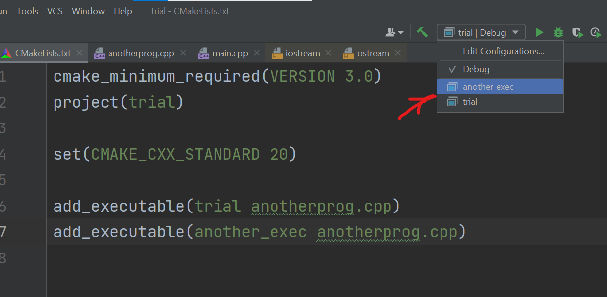

Инструкция по использованию CLion, часть 1
Запуск программы
В CLion, как и в VS, мы работаем с проектом, который может состоять из одного или нескольких файлов. Всё это компилируется в единый .exe-шник — поэтому в проекте не может быть более одной функции main().
Поначалу мы будем работать с однофайловым проектом. Таким образом, чтобы писать задачи, достаточно модифицировать файл main.cpp.
Как делать сразу несколько заданий в одном проекте?
В CLion есть возможность запускать разные написанные нами программы из одного проекта. Для этого нужно открыть файл CMakeLists.txt и модифицировать строчку add_executable(..), заменив main.cpp на название .cpp файла с программой, которую мы хотим запустить.
Есть альтернативный вариант: добавить несколько строчек add_executable(..) и выбрать соответствующий вариант сверху в выпадающем списке.
Необходимо помнить о том, что количество функций main() в файлах, которые мы указываем в одной строчке add_executable, должно быть строго равно единице! Почему в C++ есть это правило? Дело в том, что функция main() является точкой входа в программу. Если её нет, или, напротив, больше одной, выполнение программы не представляется возможным, так как в этом случае непонятно, откуда же её нужно выполнять. Отсутствие функции main() влечёт за собой ошибку компиляции.